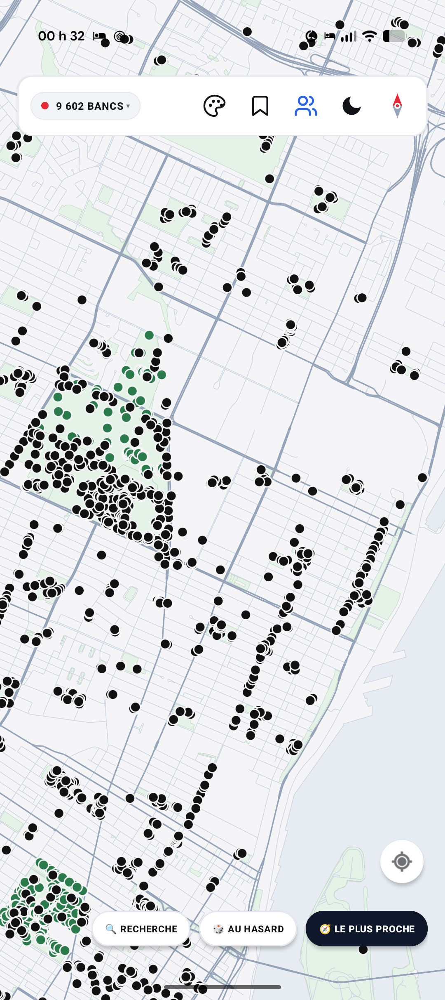
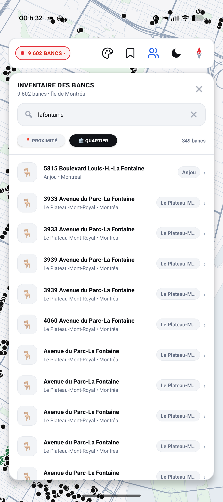
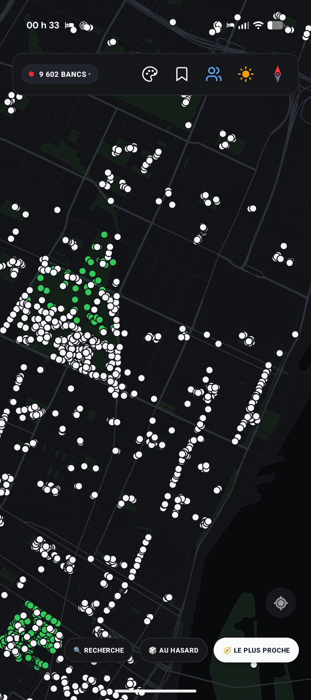
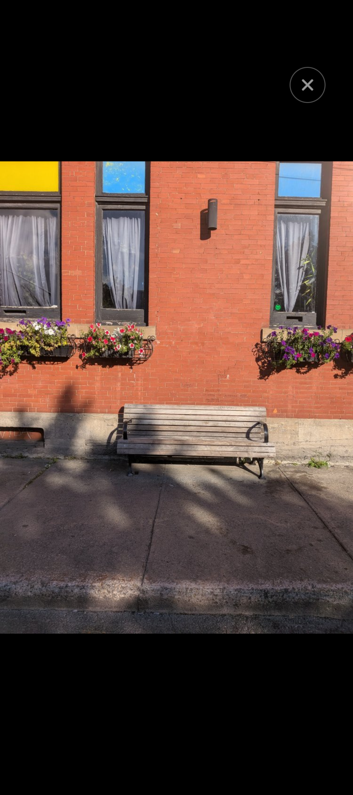

L'art de s'asseoir à Montréal.
Un atlas vectoriel minimaliste, épuré et souverain pour découvrir, contempler et réhabiter les espaces publics de la métropole. Zéro trace, zéro serveur, pure liberté urbaine.
Une expérience cartographique pure
Moteur graphique vectoriel natif accéléré par Canvas matériel, rendu en moins de 70 ms.




Inventaire des 9 602 Bancs
Un tap sur le badge déploie l'inventaire complet des bancs municipaux. Tri par proximité ou quartier, recherche instantanée et centrage en un clic.
Boussole Épurée & Nav Ergonomique
Aiguille bicolore épurée, réalignement True North en un tap, espacement optimisé des boutons et isolation tactile totale contre les clics accidentels.
Recherche d'Adresses & Lieux
Recherche géocodée d'adresses civiques (ex: 3450 Saint-Urbain), rues, parcs, quartiers emblématiques ou coordonnées GPS avec centrage automatique.
Bancs Personnalisés (« Mes bancs »)
Appui long sur la carte pour marquer un banc découvert sur le terrain. Glyphe distinctif en losange ambre, notes et photos enregistrées en local.
Rendez-vous à Mi-Chemin
Trouvez le banc parfait équidistant entre deux personnes via une clé chiffrée hors-ligne, sans jamais dévoiler votre adresse exacte grâce au flou de confidentialité.
Moteur Binaire Haute Vitesse
Format binaire IEEE 754 compilé sur mesure (montreal_map.bin). 9 602 bancs et 29 708 rues chargés en moins de 70 millisecondes sans garbage collection.
100% Hors-Ligne & Privé
Aucun serveur, aucun compte, aucun traceur. Conçu dans le respect total de votre souveraineté numérique et de votre vie privée.
Fait avec rigueur et passion pour Montréal
Les bancs publics sont les refuges démocratiques de la ville. BenchMap leur offre l'écrin numérique qu'ils méritent : simple, précis, intemporel.